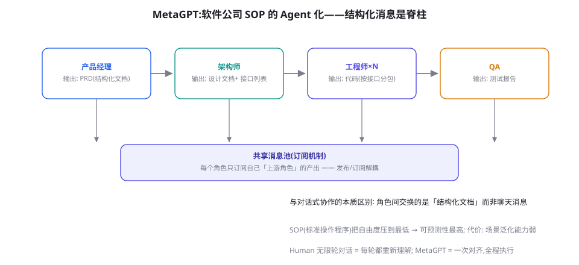

MetaGPT：软件公司隐喻与 SOP 多智能体
「给一句话，还你一家软件公司」——MetaGPT 是多 Agent 领域最大胆的隐喻实验。本章拆解它的真正创新（结构化消息与 SOP 流水线）、它在生成式项目上的实证表现、以及这个隐喻教给所有 Agent 系统的普适课。
核心论点：用 SOP 治「对话崩塌」
MetaGPT（Hong et al. 2023, arXiv:2308.00352，ICLR 2024 口头报告）的出发点是对自由对话式多 Agent 的一个犀利批评：让多个 Agent 自由聊天解决复杂任务，就像让同事用微信语音开发软件——信息损耗、话题漂移、各说各话。论文把这个现象称为「对话崩塌」（cascade）的温床：随着轮次增加，上下文膨胀、焦点涣散、Agent 之间互相重复与迎合。它的药方是搬来人类组织的成熟解法——SOP（标准操作程序）：限定角色（产品经理/架构师/工程师/QA）、限定传递物（PRD 文档/设计文档/代码/测试报告）、限定传递物必须结构化（表格、列表、接口定义，而非聊天文本）。

这个设计里最值得细品的是「结构化接口」的威力：产品经理输出的不是「我们对需求的理解大概是这样的……」，而是一张标准 PRD 表（需求编号、描述、优先级、验收标准）；架构师消费这张表产出接口定义表——每个接口有名字、参数、返回类型。下游角色永远面对精确的契约而非模糊的叙述。这是第 24 章「结构化交接物」军规的极致版本，也是全书反复出现的「契约优于对话」原则的最佳示范。
架构解剖：角色、消息池与订阅
MetaGPT 的运行时由三个构件组成。Role（角色）：封装身份提示词、能力（Action 集合）与记忆；Action（动作）：角色可执行的具体步骤（WritePRD、WriteDesign、WriteCode、RunCode、WriteTest……），每个 Action 有结构化的输入输出模型；Environment（环境）：消息池 + 发布/订阅路由——每个角色订阅「上游角色的消息类型」，上游发布产出、下游自动被触发，形成流水线。这个发布/订阅设计有一处值得点赞的工程考量：角色间解耦——产品经理不需要知道有几个工程师，只管把 PRD 发布到消息池；增减工程师数量不影响上游。这比第 29 章 Handoff 的「单线移交」多了弹性，比第 31 章群聊的「全员广播」少了噪音——三种消息语义（第 24 章）各取了一端。
# 安装: pip install metagpt ; 配置 OPENAI_API_KEY
metagpt "开发一个命令行五子棋游戏,支持人机对战"
# 内部流水线自动展开:
# 产品经理 → 产出 PRD(需求表+竞品分析+验收标准)
# 架构师 → 消费 PRD,产出系统设计(模块图+接口定义表+数据结构)
# 项目经理 → 拆分任务并分配给工程师
# 工程师 → 按接口契约逐文件写代码(角色可多个并行)
# QA → 产出并运行测试,报告问题
# 最终交付: workspace/ 目录下可运行的完整项目通信视角深读：三种消息语义的「工程税」
本章把第 24 章的消息语义学推进一层，给三种模式各算一笔「工程税」账。全员广播（群聊）：带宽税——每个 Agent 的上下文按参与人数平方膨胀；认知税——过滤无关信息的负担全在模型；退税条件——探索期你不知道谁该看什么，广播是唯一的「先跑起来」方案。单线移交（Handoff）：上下文税——完整历史强制继承，接手者背负前任的全部包袱；路由税——移交链长了以后路径管理复杂；退税条件——分工天然线性、每个环节需要完整前情。发布订阅（MetaGPT）：模板税——每种消息要定义结构化 Schema，前期设计成本三种里最高；演化税——交付物模板变更要同步上下游；退税条件——流程稳定、协作频繁的长期运行系统，模板的前期投入被反复摊薄。三笔账合起来的选型公式：预期运行次数 × 单次协作频率决定哪种税更划算——一次性任务选便宜的（广播/移交），长期运营的选贵的（发布订阅）。这也是为什么企业内部的成熟系统几乎最终都长成发布订阅形态——它们都活过了摊销期。
实证表现：它真的能「还你一家公司」吗
诚实的回答：对小型完整项目（贪吃蛇、命令行工具、简单 Web 页），MetaGPT 的端到端产出质量显著优于同期的单 Agent 与自由对话多 Agent——论文的 HumanEval/MBPP 分数与「可运行项目比例」都验证了 SOP + 结构化传递的增益；对真实世界的复杂项目（大型仓库、遗留代码集成），它的产出仍是「能看的高质量脚手架」而非成品——全局架构决策、隐性业务约束、与现有生态的兼容，依然需要人类。这个定位要校准预期：MetaGPT 演示的价值不是「替代开发团队」，而是证明了「结构化协作协议」可以把多 Agent 的输出质量提升一个档次——这个结论可以搬回你自己的任何系统。
流水线模式有自己特有的失败模式：接力损耗——每个环节的理解偏差在下环节被放大（PRD 里一句含糊的需求，到代码层变成三个模块的歧义实现）。MetaGPT 的三个对策值得学习：① 交付物模板化——PRD/设计的字段固定，模型填空比自由发挥稳定；② 发布前自审——每个角色产出后跑一次自查 Action（检查模板字段完整性）；③ 人类检查点——PRD 与设计文档之间可插入人工确认（默认关闭，企业部署建议开启）。对照第 22 章「先校验后反思」的排序：MetaGPT 用模板做校验、用订阅做路由——顺序、结构、验证三件套齐了，自由度只剩「填空质量」。
失败案例解剖：流水线什么时候会卡死
SOP 流水线并非万能保险箱，它的三种典型卡死模式与解锁姿势：卡死一：上游模板字段填不出——产品经理面对一个「无法结构化」的需求（用户只说「做个好玩的」），PRD 的字段表会逼出幻觉（编造需求细节）。解锁：流水线入口加「需求澄清 Task」——与用户往返直到能填满模板；填不满就承认「该需求不适合流水线处理」。卡死二：下游死守过时模板——架构师发现 PRD 有矛盾时，SOP 没有给「打回」通道，它只能在矛盾上继续盖楼。解锁：每个 Action 加「上游校验」，矛盾触发打回消息（MetaGPT 的订阅机制天然支持反向消息——加一个「Review-Failed」消息类型即可）。卡死三：测试-修复循环失控——QA 与工程师之间的修复循环没有上限，两角色互相礼貌推诿到天荒地老。解锁：修复循环轮次上限 + 上限到达后「降级交付」（交付当前版本 + 已知问题清单）。三种卡死共享一个预防哲学：流水线的每个接口处都要预定义「不符合预期时怎么办」——happy path 之外的全是设计责任区。
from pydantic import BaseModel, ValidationError
from openai import OpenAI
import json
client = OpenAI()
# ① 契约层: 每个角色的交付物模板
class PRD(BaseModel):
features: list[dict] # [{name, desc, priority, accept}]
risks: list[str]
class Design(BaseModel):
modules: list[dict] # [{name, responsibility}]
interfaces: list[dict] # [{name, params, returns}]
def run_action(name: str, prompt: str, schema: type[BaseModel]):
"""② 角色动作: 填模板 + 校验,失败重试一次"""
for _ in range(2):
out = client.chat.completions.create(
model="gpt-4o-mini", temperature=0,
response_format={"type": "json_object"},
messages=[{"role": "user", "content":
f"{prompt}
严格按此 JSON 结构输出:
"
f"{json.dumps(schema.model_json_schema(), ensure_ascii=False)}"}])
try:
return schema.model_validate_json(
out.choices[0].message.content)
except ValidationError as e:
prompt = f"上次输出不符合 Schema: {e}
请修正。原要求:
{prompt}"
raise RuntimeError(f"{name} 两次未通过模板校验")
# ③ 串联流水线
prd = run_action("产品经理",
f"为需求「{sys.argv[1]}」写 PRD", PRD)
design = run_action("架构师",
f"基于 PRD 做系统设计:
{prd.model_dump_json()}", Design)
print(json.dumps(design.model_dump(), ensure_ascii=False, indent=1))跑通这段代码，你就拥有了一个最小 SOP 流水线——对照 MetaGPT 的完整实现，你缺的只是它的角色库、模板库与记忆管理。这个练习还顺手验证了本章最核心的主张：SOP 流水线的门槛是「设计与契约」，不是框架。当你能自己写出契约层时，框架对你的意义就只剩下「省时间」，而不再是「提供可能性」。
自定义一条你自己的流水线
框架用法之外，给出一个「范式平替」的最小实现思路——用你已有的知识（第 27 章循环 + 第 8 章结构化输出）就能搭出同构系统，不依赖 MetaGPT。设计三步：① 定义交付物模板——每个角色一个 Pydantic 模型（PRD 模型、设计模型、代码包模型），这是整个系统的契约层；② 实现角色 Action——每个 Action 是「消费上游模型 → 填充下游模板」的函数（LLM 调用 + 结构化输出解析 + 模板校验）；③ 串联流水线——顺序调用 Action 链，每个 Action 的输出作为下一个的输入（也可以做成发布订阅——但顺序版通常够用且更好调试）。六十行左右就能跑通「PRD → 设计 → 代码」三段。这个练习的价值超出实现本身：你会亲手体会到 SOP 流水线的本质是「把自由度换成可预测性」——每一层模板、每一次校验，都是在收窄模型的自由度来换取交付的确定性。什么时候这个交换划算（流程成熟、可模板化）、什么时候不划算（探索、创意），是范式应用的唯一判断题。
质量经济学：多 Agent 写代码的成本收益分析
「用一整个软件公司写一个小程序」听起来奢侈，但真实的账本需要分层计算。成本侧：五角色流水线的 token 消耗约为单 Agent 一次生成的 5~15 倍（每个角色都要读上游交付物）；加上流水线的延迟（各环节串行），一次完整交付的时间以十分钟计。收益侧：质量提升集中在三个可测量的维度——可运行率（是否直接跑起来）、需求符合度（对照 PRD 的功能覆盖）、结构合理性（模块划分与接口设计）。对「可运行率」这个最硬的指标，多 Agent SOP 的增益在简单项目上确实显著（多份复现与后续研究一致显示其对单 Agent 的优势），因为 QA 角色的「跑测试-报错-修复」循环提供了单 Agent 常缺的执行反馈。决策公式：当「产出必须可运行」（而非草稿/灵感）且「人工修复一小时的成本 > 流水线溢价的成本」时，SOP 流水线划算；写一段「供人修改的起点代码」，单 Agent 加个好提示词依然是性价比之王。把多 Agent 当精加工工序，不当粗加工全能机——这个定位能避开该领域最常见的高估。
读完本章后，把你业务里的任何流程 SOP 化的通用三步：第一步：物化交付物——把流程中每个环节「交给下一环节的东西」写成模板（字段化、可校验）；这是最难也最值钱的一步，它强迫你回答「这个环节到底产出什么」。第二步：定义校验——每个模板配一个 Schema 与一条人工抽查清单；校验器先行（第 22 章排序原则）。第三步：选执行壳——MetaGPT/自研/CrewAI Flows/LangGraph 子图皆可，契约层定了之后壳可以随换。三步的顺序不可颠倒——先选壳的团队会被壳的抽象牵着走，SOP 范式的精髓恰恰在于「契约先行」。
与数据分析场景的结合是 SOP 流水线另一个已被广泛验证的应用。把「软件公司」的骨架换掉血肉：产品经理 → 分析需求界定（输出：分析问题清单 + 成功标准表）；架构师 → 分析方案设计（输出：指标定义表 + 数据源映射）；工程师 → SQL/Python 实现（输出：可执行分析脚本 + 结果表）；QA → 数字复核（输出：复算报告——所有关键数字用第二种方法重算一遍）。这个改造只需重写四个 Action 的模板与提示词，流水线骨架原封不动。它验证了本章范式泛化的主张，也暗示了更远的图景：你所在行业的任何「多角色质检链」业务，理论上都存在一个 SOP Agent 化的候选方案——判断题只有一个：交付物能否被模板化到「填空即可」的程度。
超越软件公司：SOP 范式的泛化
软件公司隐喻的价值在于它的可迁移性——任何「人类组织已有成熟 SOP」的领域都可以套用同一骨架：研究报告流水线（选题策划 → 资料收集 → 分析 → 撰写 → 核查，交付物：证据表 + 报告）；内容审核流水线（初审 → 复审 → 合规复核，交付物：判定表 + 依据）；投研分析流水线（数据采集 → 建模 → 撰写 → 风控审查）。MetaGPT 框架本身支持自定义 Role/Action（定义你的交付物模板与订阅链），但更务实的建议是：把这个范式当作设计模式而非框架绑定——你在 LangGraph 的子图里、甚至第 27 章的手写循环里，都能实现同构的 SOP 流水线。框架提供的是脚手架，范式才是资产。
| 维度 | MetaGPT(SOP 流水线) | CrewAI(声明团队) | AutoGen(自由群聊) |
|---|---|---|---|
| 协作媒介 | 结构化文档(模板) | 任务产出(半结构化) | 自由消息 |
| 可预测性 | 最高 | 高(顺序模式) | 低 |
| 场景泛化 | 弱(SOP 要重写) | 中 | 强 |
| 最适合 | 交付物可模板化的流程 | 角色分明的一般协作 | 探索性任务 |
三个高频疑问
Q：MetaGPT 与 ChatDev 什么关系？同期（2023 年中）的姐妹工作，思路高度相似（虚拟软件公司 + 角色流水线），差异在侧重：MetaGPT 强调「结构化交付物 + SOP」（学术表达更系统），ChatDev 强调「Chat 链」（把开发流程切成一连串双 Agent 对话，如「CTO 指挥程序员」）与后来的经验学习（Co-Learning，跨任务积累可复用片段）。工程选型上两者都是「范式参考」大于「生产依赖」——更建议把它们当设计模式库来读。
Q：流水线中间某环节质量差，怎么定位？与第 24 章交接审计同源但更简单——流水线的线性结构让归因变得容易：从最终问题逆推，检查它经过的每个上游交付物。实操建议：给每个交付物存档（消息池本身就是天然存档），并在每个 Action 的输出处挂校验器（模板字段完整性、关键内容抽查）——校验器报警的接口处就是问题接口。流水线系统的可调试性是它被低估的优点。
Q：SOP 会不会限制模型发挥「惊喜」？会，而且这是特性不是缺陷。流水线的设计目标就是「消除意外」；需要惊喜的场景（创意发散、开放探索）本来就不该上流水线。更精确的表述：SOP 把「惊喜」从过程移到了结果——过程标准化后，质量波动集中在每个「填空」环节的内容质量上，那里的惊喜（更好的方案、更深的洞察）依然可能发生，而且因为结构清晰而更容易被保留和复用。
关于本章在框架篇的位置，还有一个阅读视角的说明：如果说第 31 章（AutoGen）展示了多 Agent 的「最大自由度」、第 32 章（CrewAI）展示了「中等的声明式结构」，本章（MetaGPT）就是「最大结构度」的一端。三端看完，「结构-自由」光谱在你脑中就有了三个标定点——之后遇到的任何多 Agent 系统（包括第 73 章的 Deep Research、第 90 章的四大产品），都可以先问「它在光谱的哪个位置、为什么」，再判断它的设计取舍是否与任务匹配。这个「光谱思维」比记住每个框架的功能列表有用得多——功能会过时，光谱不会。
历史注脚：软件公司隐喻的思想谱系
「让 AI 组成软件公司」的想法有一段值得了解的前史。2018 年之前的经典多 Agent 研究（如后来被反复引用的 génération 自动机协作）已探索过角色分工；2023 年集中爆发的「虚拟公司」浪潮（MetaGPT、ChatDev、AgentVerse、软件2.0 讨论等）则由一个共同的技术前提触发：LLM 的代码能力终于过了「可运行」的门槛——在此之前，角色分工的产物（设计文档、伪代码）无法闭环验证，分工只是表演；此后，「架构师-工程师-QA」的循环有了真实的反馈信号（代码能跑/测试通过），分工才第一次产生复利。这个时间点依赖再次印证本书的环境真实性命题。另一个值得记住的先例：MetaGPT 的「结构化交付物」思想直接致敬了人类软件工程的文档文化（PRD/设计文档/接口契约）——这提醒我们，多 Agent 领域的许多「创新」，本质是把人类组织几十年的协作智慧翻译成模型可执行的形式；读透一个 MetaGPT，等于重温一遍软件工程管理史。
下一章预告式的收尾：本章与前三章覆盖了「多 Agent 协作」的主要范式，但它们有一个共同假设——协作的核心是「任务在 Agent 之间流转」。第 34 章的 LlamaIndex 代表另一种世界观：协作的核心是「数据在管线中流动」，Agent 只是数据变换中的一种特殊节点。当你下次面对「文档多还是逻辑多」的问题时，这两类框架的分工就会自然浮现。
MetaGPT 系项目迭代快、接口变动频繁，本章聚焦的「范式与机制」（SOP、结构化交付物、发布订阅、接力损耗对策）都是跨版本稳定的思想层内容；动手实验时请以官方仓库的最新 README 为准。把思想层与实现层分开学习，是你应对整个 Agent 领域「高速演化」的元能力——本书的每一章都在有意训练这种分层。
还有一个与第 27 章手写哲学的呼应值得点破：MetaGPT 的「模板化交付物 + 发布订阅」拆开看，每一件你都已经会做——Pydantic 模板是第 8 章的结构化输出，消息池是第 24 章的交接物仓库，订阅路由是一张 if-else 表。本章真正教的新东西只有一个设计决策：把「人读的文档」当作「机器间通信的协议」。这个决策的价值在于复用了人类组织沉淀了几十年的文档模板智慧——PRD 表、接口定义表、测试报告，都是经过大量实践打磨过的「信息完备性结构」。Agent 时代的一个独特机会正是如此：人类文明的协作遗产，都是 Agent 协作的候选协议库——法律合同、医疗病历、财务报表、实验报告……每个成熟的文档模板背后，都是一轮已经被踩过的坑。以这个眼光重新审视你的行业文档，SOP Agent 化的灵感会自己涌现。
决定动手实验前，三个现实预期：其一，完整软件公司流水线的一次运行成本不低（多角色 × 长文档，单次数美元量级）——实验请从单环节（比如只用它的「工程师」Action）开始；其二，生成的项目依赖安装与运行环境问题常见（它写的代码也要能装依赖）——准备一个干净的容器环境（第 60 章）；其三，中文需求的 PRD/设计质量与英文有可感知差距（训练语料分布所致）——重要项目建议英文提需求、中文用产物。三条都不是劝退，而是「把预期调到与工具的真实形态对齐」。
最后补一个「逆向应用」的思路：SOP 流水线不只可以「生成」交付物，还可以「审计」交付物——把流水线反过来跑：QA 角色先拿到一份人类写的文档，产品经理角色对照 PRD 模板检查它的完备性，架构师角色检查它与系统现状的一致性。这个「审计流水线」在合规审查、合同评审、代码验收场景里比「生成流水线」更容易落地——因为它不产出新内容，只产出「结构化的检查意见」，对准确率的要求更容易被 Critic 清单（第 22 章）保障。生成难、审计易，是所有 AIGC 系统选切入点时的黄金法则，SOP 流水线同样适用。
至此本章的机制与范式讲解完毕。合上书前的最后一个建议：把你所在团队任何一个「三个人以上经手的工作流」拿出来，花二十分钟画出它的交付物模板链——不看任何框架文档。这个练习的完成度，就是你对本章理解的真实刻度；而练习的产物，几乎总是一个可以直接开工的 Agent 化提案。
关于「一句话还你一家公司」这句宣传语，本章给出了它的精确翻译：一句话可以还你一家「按 SOP 运作的小型虚拟公司」，它在模板化程度高的交付物上表现出色，在需要跨系统整合与深层领域判断的任务上仍需人类主导。把宣传语翻译成能力边界语句，是技术人阅读这个领域一切传播内容的必备技能——这门「翻译课」的教材，就是本书反复练习的能力边界分析。
关于「幻觉的产业链」还值得补一个流水线特有的观察：上游角色的幻觉（PRD 里编造的功能细节）会沿着流水线被「正规化」——下游角色认真地把幻觉实现成代码、写成测试、盖上「质检通过」的章。这个「幻觉正规化」现象是流水线系统特有的风险：每个环节的局部理性（按模板办事）叠加成全局的非理性（完整交付一个错误的产品）。对策是把「事实性校验」做成流水线的横向切面——每个交付物在进入下一环节前，由一个独立的事实核查 Action 对照「外部真源」（需求原文、数据源、法律条文）核验，而不是只核验「模板字段是否填了」。纵向填空 + 横向核验，才是完整的流水线质检。
本章小结
- MetaGPT 诊断「对话崩塌」，药方是 SOP：定角色、定交付物、交付物必须结构化。
- 架构三件套：Role/Action/Environment——发布订阅消息池让角色解耦、流水线可增减。
- 实证定位：小型完整项目质量出众；复杂项目是高质量脚手架而非成品。
- 接力损耗的三对策：模板化交付、发布前自审、人类检查点——可迁移到任何流水线系统。
- 范式 > 框架：SOP 流水线可以在任何编排层实现，MetaGPT 是它的最佳参考实现。
- 三种消息语义的工程税：广播交带宽税、移交交上下文税、订阅交模板税——运行时长决定选型。
自测题
- 用「对话崩塌」诊断你见过的一次多 Agent 失败（或你自己的多人群聊）：崩塌发生在哪一环？SOP 能拦住吗？
- 为「研究报告流水线」写出四个角色的交付物模板（每个模板 3~5 个字段）。
- 发布/订阅 vs Handoff vs 全员广播：三种消息语义各自的失败模式是什么？
- 你的领域有现成 SOP 吗？如果有，它为什么还没被 Agent 化——是技术问题还是交付物不可模板化？
参考文献与延伸阅读
- Hong, S. et al. (2023). MetaGPT: Meta Programming for a Multi-Agent Collaborative Framework. ICLR 2024 Oral. arXiv:2308.00352
- MetaGPT 团队 (2024). MetaGPT 官方文档与示例仓库. github.com/FoundationAgents/MetaGPT; docs.deepwisdom.ai
- Qian, C. et al. (2023). ChatDev: Communicative Agents for Software Development. ACL 2024. arXiv:2307.07924（同期同思路的姐妹项目，虚拟公司范式）
- Qian, C. et al. (2024). Experiential Co-Learning of Software-Developing Agents (ChatDev 进化版). ACL 2024. arXiv:2405.11371